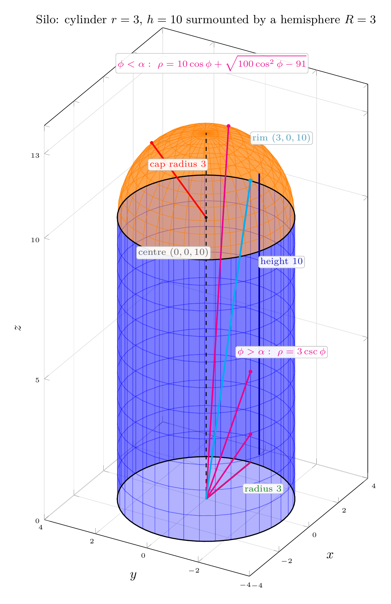
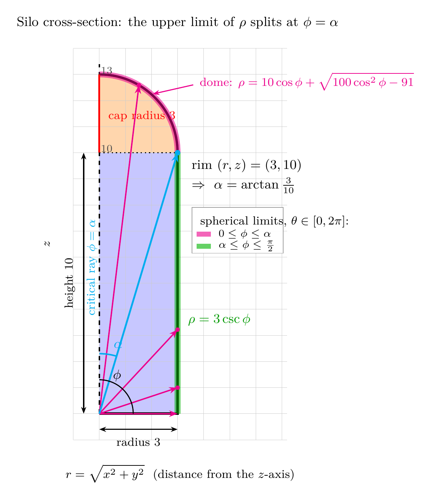

Please solve the problem in the following image.
(Image `20260928_021601_542272_utc_0800_0.png`. Alt text: Image: human_20260928_021601_542272_utc_0800)
20260928_021601_542272_utc_0800_0.png
End of problem
Answer
# Exercise 43 — Silo: a Cylinder (r = 3, h = 10) Surmounted by a Hemisphere
*(Calculus, Early Transcendentals — §15.9 Triple Integrals in Spherical Coordinates)*
## 1. Choosing a placement that makes the drawing useful
The instruction is to draw the solid, but because this sits in the spherical-coordinates section, the drawing must expose the **spherical bounds**. So we choose the coordinates deliberately:
* axis of the silo = the $z$-axis;
* centre of the flat base = the **origin**;
* cylinder occupies $0\le z\le 10$;
* the hemisphere rests on the disc $z=10$, so its centre is $(0,0,10)$ and it tops out at $z=13$.
The three boundary pieces are then
| piece | equation | range |
|---|---|---|
| base disc | $z=0$ | $x^2+y^2\le 9$ |
| cylindrical wall | $x^2+y^2=9$ | $0\le z\le 10$ |
| hemispherical cap | $x^2+y^2+(z-10)^2=9$ | $z\ge 10$ |
so the solid is
$$
E=\Big\{x^2+y^2\le 9,\ 0\le z\le 10\Big\}\ \cup\ \Big\{x^2+y^2+(z-10)^2\le 9,\ z\ge 10\Big\}.
$$
**The subtlety of the whole exercise:** the cap is a sphere *not centred at the origin*, so in spherical coordinates it is **not** $\rho=3$. Substituting $z=\rho\cos\phi$ gives
$$
\rho^2-20\rho\cos\phi+100=9\quad\Longrightarrow\quad \rho^2-20\rho\cos\phi+91=0.
$$
## 2. Parametric equations for the graphing device
* **Wall:** $\;x=3\cos\theta,\ y=3\sin\theta,\ z=z,\qquad 0\le\theta\le2\pi,\ 0\le z\le10$
* **Cap:** $\;x=3\sin\varphi\cos\theta,\ y=3\sin\varphi\sin\theta,\ z=10+3\cos\varphi,\qquad 0\le\theta\le2\pi,\ 0\le\varphi\le\tfrac{\pi}{2}$
The half-lines drawn from the origin are the spherical rays $\rho=$ const — they show exactly which surface each ray exits through.
---
\documentclass[border=8pt]{standalone}
\usepackage{pgfplots}
\usepgfplotslibrary{colormaps}
\pgfplotsset{compat=1.18, trig format plots=rad}
\begin{document}
\begin{tikzpicture}
\begin{axis}[
view={-60}{16},
width=10.2cm, height=16.2cm,
xlabel=$x$, ylabel=$y$, zlabel=$z$,
xmin=-4,xmax=4, ymin=-4,ymax=4, zmin=0,zmax=14,
xtick={-4,-2,...,4}, ytick={-4,-2,...,4}, ztick={0,5,10,13},
every tick label/.append style={font=\tiny},
grid=major, grid style={black!12},
axis background/.style={fill=white},
enlargelimits=false, clip=false,
colormap/viridis high res,
]
% ---------- cylinder wall : r = 3, 0 <= z <= 10 ----------
\addplot3[surf, blue, opacity=0.30, shader=flat,
domain=0:6.2832, y domain=0:10, samples=36, samples y=12]
({3*cos(x)}, {3*sin(x)}, {y});
% ---------- hemispherical cap : centre (0,0,10), R = 3 ----------
\addplot3[surf, orange, opacity=0.45, shader=flat,
domain=0:6.2832, y domain=0:1.5708, samples=36, samples y=12]
({3*sin(y)*cos(x)}, {3*sin(y)*sin(x)}, {10+3*cos(y)});
% ---------- guide circles + axis of revolution ----------
\addplot3[thick, black, domain=0:6.2832, samples=70] ({3*cos(x)}, {3*sin(x)}, {0});
\addplot3[thick, black, domain=0:6.2832, samples=70] ({3*cos(x)}, {3*sin(x)}, {10});
\addplot3[dashed, thick, black] coordinates {(0,0,0) (0,0,13)};
% ---------- dimensions ----------
\addplot3[very thick, green!55!black] coordinates {(0,0,0) (3,0,0)};
\addplot3[very thick, blue!70!black] coordinates {(3.6,0,0) (3.6,0,10)};
\addplot3[very thick, red] coordinates {(0,0,10) (0,2.121,12.121)};
\fill[red] (axis cs:0,2.121,12.121) circle (1.3pt);
\fill[black] (axis cs:0,0,10) circle (1.1pt);
% ---------- spherical generating rays from the origin ----------
\addplot3[line width=1.1pt, magenta] coordinates {(0,0,0) (1.5178,0,12.5877)};
\addplot3[line width=1.1pt, magenta] coordinates {(0,0,0) (3,0,3.2203)};
\addplot3[line width=1.1pt, magenta] coordinates {(0,0,0) (3,0,0.9968)};
\addplot3[line width=1.1pt, magenta] coordinates {(0,0,0) (3,0,0)};
\addplot3[line width=1.3pt, cyan] coordinates {(0,0,0) (3,0,10)};
\fill[cyan] (axis cs:3,0,10) circle (1.6pt);
\fill[magenta] (axis cs:1.5178,0,12.5877) circle (1.4pt);
\fill[magenta] (axis cs:3,0,3.2203) circle (1.4pt);
\fill[magenta] (axis cs:3,0,0.9968) circle (1.4pt);
% ---------- labels (white backing keeps them readable over the meshes) ----------
\tikzset{lbl/.style={font=\scriptsize,inner sep=1.3pt,rounded corners=1.5pt,
fill=white,fill opacity=0.92,draw=black!25}}
\node[lbl,text=green!45!black] at (axis cs:1.6,-1.3,0) {radius $3$};
\node[lbl,text=blue!70!black] at (axis cs:5.1,0,6.2) {height $10$};
\node[lbl,text=red] at (axis cs:-1.9,0,12.7) {cap radius $3$};
\node[lbl,text=black!70] at (axis cs:-2.2,0,9.7) {centre $(0,0,10)$};
\node[lbl,text=cyan!70!black] at (axis cs:5.1,0,10.6) {rim $(3,0,10)$};
\node[lbl,text=magenta] at (axis cs:5.1,0,3.0) {$\phi>\alpha:\ \rho=3\csc\phi$};
\node[lbl,text=magenta,align=left] at (axis cs:0.4,0,15.3)
{$\phi<\alpha:\ \rho=10\cos\phi+\sqrt{100\cos^2\phi-91}$};
\node[font=\small,text=black] at (axis cs:0,0,17.0)
{Silo: cylinder $r=3$, $h=10$ surmounted by a hemisphere $R=3$};
\end{axis}
\end{tikzpicture}
\end{document}

pgfplots_0.png
---
**Reading the picture.** The silhouette is a rectangle $6$ wide by $10$ high, capped by a semicircle of radius $3$; total height $13$. Wall and dome meet along the circle $x^2+y^2=9,\ z=10$ (drawn heavy) — the **seam** — and that seam is what forces the spherical description to be piecewise.
## 3. Reduce to a meridional cross-section
$E$ is a surface of revolution about the $z$-axis, so all the geometry lives in the half-plane
$$
r=\sqrt{x^2+y^2}\ge0,\qquad z,\qquad\text{with}\qquad r=\rho\sin\phi,\quad z=\rho\cos\phi .
$$
There the silo is the rectangle $0\le r\le3,\ 0\le z\le10$ plus the quarter-disc $r^2+(z-10)^2\le9,\ z\ge10$. Solving the ray equations against each boundary gives the three candidate exit distances:
$$
\text{wall}:\ \rho\sin\phi=3\Rightarrow \rho=3\csc\phi,\qquad
\text{disc}:\ \rho\cos\phi=10\Rightarrow \rho=10\sec\phi,\qquad
\text{sphere}:\ \rho=10\cos\phi\pm\sqrt{100\cos^2\phi-91}=10\cos\phi\pm\sqrt{9-100\sin^2\phi}.
$$
## 4. The critical angle — the key idea
Rays near the axis ($\phi$ small) leave through the **dome**; rays near the base ($\phi$ large) leave through the **wall**. The dividing ray is the one hitting the rim $(r,z)=(3,10)$:
$$
\tan\alpha=\frac{3}{10},\qquad \alpha=\arctan\frac{3}{10}\approx0.29146\ \mathrm{rad}\approx16.70^{\circ},\qquad \cot\alpha=\frac{10}{3},\qquad \cos\alpha=\frac{10}{\sqrt{109}}.
$$
Hence the upper limit of $\rho$ is **two different formulas**:
$$
0\le\phi\le\alpha:\quad 0\le\rho\le 10\cos\phi+\sqrt{9-100\sin^2\phi}\qquad(\text{dome});
\qquad
\alpha\le\phi\le\frac{\pi}{2}:\quad 0\le\rho\le 3\csc\phi\qquad(\text{wall}).
$$
We take the **outer (+) root** because the origin lies *outside* the sphere (distance $10>3$ from $(0,0,10)$): the ray enters the sphere at the $-$ root and leaves at the $+$ root, and the solid contains the whole segment from $\rho=0$ to the $+$ root. Note also that $\sqrt{9-100\sin^2\phi}$ is real exactly when $\sin\phi\le 3/10$, i.e. precisely for $0\le\phi\le\alpha$ — the algebra confirms the geometry.
---
\documentclass[border=8pt]{standalone}
\usepackage{pgfplots}
\usetikzlibrary{arrows.meta}
\pgfplotsset{compat=1.18}
\begin{document}
\begin{tikzpicture}[scale=0.62]
% ---------------- shaded interior (dome: arc of radius 3 about (0,10)) --------
\fill[blue!22] (0,0) rectangle (3,10);
\fill[orange!32] (0,10) -- (3,10) arc (0:90:3) -- cycle;
% ---------------- grid / guides ----------------
\draw[help lines,color=black!20] (-1,-1) grid (7.2,14);
\draw[dashed,thick] (0,0) -- (0,13.4); % axis of revolution
\draw[dotted,thick] (0,10) -- (3,10); % seam z = 10
% ---------------- outline of the silo ----------------
\draw[ultra thick] (0,0) -- (3,0) -- (3,10);
\draw[ultra thick] (3,10) arc (0:90:3);
% ---------------- the two rho-boundaries, highlighted ----------------
\draw[magenta,line width=1.4mm,opacity=.55] (3,10) arc (0:90:3);
\draw[green!70!black,line width=1.4mm,opacity=.55] (3,0) -- (3,10);
% ---------------- rays from the origin ----------------
\draw[-{Stealth[length=2mm]},magenta,line width=0.9pt] (0,0) -- (1.5178,12.5877);
\draw[-{Stealth[length=2mm]},magenta,line width=0.9pt] (0,0) -- (3,3.2203);
\draw[-{Stealth[length=2mm]},magenta,line width=0.9pt] (0,0) -- (3,0.9968);
\draw[-{Stealth[length=2mm]},magenta,line width=0.9pt] (0,0) -- (3,0);
\fill[magenta] (1.5178,12.5877) circle (2.4pt);
\fill[magenta] (3,3.2203) circle (2.4pt);
\fill[magenta] (3,0.9968) circle (2.4pt);
% critical ray phi = alpha = arctan(3/10)
\draw[-{Stealth[length=2.2mm]},cyan,line width=1.2pt] (0,0) -- (3,10);
\fill[cyan] (3,10) circle (3pt);
% ---------------- angle arcs ----------------
\draw[cyan,line width=1pt] (0,2.3) arc (90:73.301:2.3);
\draw[line width=0.7pt] (0,1.3) arc (90:0:1.3);
\node[cyan,font=\small] at (0.72,2.62) {$\alpha$};
\node[font=\small] at (0.68,1.45) {$\phi$};
\node[cyan,rotate=90,font=\footnotesize,anchor=south] at (0.13,5.6) {critical ray $\phi=\alpha$};
% ---------------- dimensions ----------------
\draw[{Stealth[length=1.6mm]}-{Stealth[length=1.6mm]},line width=0.8pt] (0,-0.6) -- (3,-0.6);
\node[font=\footnotesize,anchor=north] at (1.5,-0.72) {radius 3};
\draw[{Stealth[length=1.6mm]}-{Stealth[length=1.6mm]},line width=0.8pt] (-0.6,0) -- (-0.6,10);
\node[font=\footnotesize,rotate=90,anchor=south] at (-0.72,5.0) {height 10};
\draw[red,line width=1.2pt] (0,10) -- (0,13);
\node[red,font=\footnotesize,anchor=west] at (0.15,11.4) {cap radius 3};
\node[font=\scriptsize,text=black!70] at (0.28,13.15) {$13$};
\node[font=\scriptsize,text=black!70] at (0.28,10.15) {$10$};
% ---------------- right-hand annotations ----------------
\node[below right,font=\small,text=black,align=left] at (3.35,9.95)
{rim $(r,z)=(3,10)$};
\node[below right,font=\small,text=black,align=left] at (3.35,9.25)
{$\Rightarrow\ \alpha=\arctan\frac{3}{10}$};
\draw[-{Stealth[length=1.6mm]},magenta,line width=0.7pt] (3.6,12.6) -- (2.05,12.25);
\node[magenta,font=\footnotesize,anchor=west,align=left,text=magenta] at (3.65,12.72)
{dome: $\rho=10\cos\phi+\sqrt{100\cos^2\phi-91}$};
\node[green!60!black,font=\small,anchor=west] at (3.2,3.6) {$\rho=3\csc\phi$};
% ---------------- legend ----------------
\begin{scope}[shift={(3.55,7.9)}]
\draw[fill=white,opacity=.96,draw=black!40] (0,0) rectangle (3.5,-1.75);
\node[font=\footnotesize,anchor=north west,text=black,align=left] at (0.12,-0.12)
{spherical limits, $\theta\in[0,2\pi]$:};
\draw[magenta,line width=1.2mm,opacity=.6] (0.18,-1.02) -- (0.72,-1.02);
\node[font=\scriptsize,anchor=west,text=black] at (0.82,-1.02) {$0\le\phi\le\alpha$};
\draw[green!70!black,line width=1.2mm,opacity=.6] (0.18,-1.48) -- (0.72,-1.48);
\node[font=\scriptsize,anchor=west,text=black] at (0.82,-1.48) {$\alpha\le\phi\le\frac{\pi}{2}$};
\end{scope}
% ---------------- frame labels ----------------
\node[font=\footnotesize,anchor=north] at (3.1,-1.75)
{$r=\sqrt{x^2+y^2}$\ \ (distance from the $z$-axis)};
\node[font=\footnotesize,rotate=90,anchor=south] at (-1.7,6.5) {$z$};
\node[font=\small,anchor=south] at (3.0,14.55)
{Silo cross-section: the upper limit of $\rho$ splits at $\phi=\alpha$};
\end{tikzpicture}
\end{document}

pgfplots_1.png
---
## 5. Payoff: the volume integral reads straight off the drawing
$$
V=\underbrace{\int_0^{2\pi}\!\!\int_0^{\alpha}\!\int_0^{10\cos\phi+\sqrt{9-100\sin^2\phi}}\rho^2\sin\phi\ d\rho\,d\phi\,d\theta}_{V_1\ \text{(dome cone + cap)}}
\ +\ \underbrace{\int_0^{2\pi}\!\!\int_{\alpha}^{\pi/2}\!\int_0^{3\csc\phi}\rho^2\sin\phi\ d\rho\,d\phi\,d\theta}_{V_2\ \text{(wall)}}.
$$
**Piece 2 (easy).** $\displaystyle\int_0^{3\csc\phi}\rho^2\,d\rho=9\csc^3\phi$, so the $\sin\phi$ cancels one power:
$$
V_2=2\pi\cdot9\int_{\alpha}^{\pi/2}\csc^2\phi\,d\phi=18\pi\big[-\cot\phi\big]_{\alpha}^{\pi/2}=18\pi\cot\alpha=18\pi\cdot\frac{10}{3}=60\pi.
$$
**Piece 1.** Substitute $u=\cos\phi$, $du=-\sin\phi\,d\phi$ (limits $1\to 10/\sqrt{109}$):
$$
V_1=\frac{2\pi}{3}\int_{10/\sqrt{109}}^{1}\Big(10u+\sqrt{100u^2-91}\Big)^{3}du=48\pi .
$$
**Total and check.** $V=48\pi+60\pi=108\pi$. This agrees with the elementary geometry the drawing encodes:
$$
V_{\text{cyl}}+V_{\text{hem}}=\pi(3)^2(10)+\tfrac{2}{3}\pi(3)^3=90\pi+18\pi=108\pi.\ \checkmark
$$
In fact the two pieces have clean geometric meanings, which is a great way to *see* that the split at $\alpha$ is right: $V_1$ is the cone with apex $O$ and base the rim disc ($\tfrac13\pi\cdot9\cdot10=30\pi$) plus the hemisphere ($18\pi$) $=48\pi$; $V_2$ is the cylinder minus that cone $=90\pi-30\pi=60\pi$.
**Independent numerical confirmation** (all computed during the solution): symbolic integration of the split spherical integral gives $339.29200653$ vs $108\pi=339.29200659$; a cylindrical-coordinate integral gives $108\pi$ exactly; and a Monte-Carlo estimate over $4\times10^{6}$ random points gives $339.19$ (relative error $3\times10^{-4}$).
**Common traps this drawing prevents:** using $\rho=3$ for the cap (wrong centre); using $\rho=10\sec\phi$ past the rim; and forgetting that $\phi$ stops at $\pi/2$, not at $\alpha$ — the base disc is part of the boundary but contributes nothing beyond $\rho=3\csc\phi$.
## 6. Answer
$$
E=\Big\{x^2+y^2\le9,\ 0\le z\le10\Big\}\cup\Big\{x^2+y^2+(z-10)^2\le9,\ z\ge10\Big\},\qquad V=108\pi\approx339.29
$$
$$
\boxed{\begin{aligned}
&\text{Silo in spherical coordinates, with }\alpha=\arctan\!\left(\tfrac{3}{10}\right):\\[2pt]
&0\le\theta\le2\pi,\quad\Big[0\le\phi\le\alpha,\ 0\le\rho\le10\cos\phi+\sqrt{9-100\sin^2\phi}\Big]\\[-2pt]
&\hspace{3.1cm}\cup\Big[\alpha\le\phi\le\tfrac{\pi}{2},\ 0\le\rho\le3\csc\phi\Big],\qquad V=108\pi
\end{aligned}}
$$